Savvy Security LLC
Books
Interactive novels and narratives by Malcolm R. Smith. Pick one below — each opens as a free, self-contained reader.
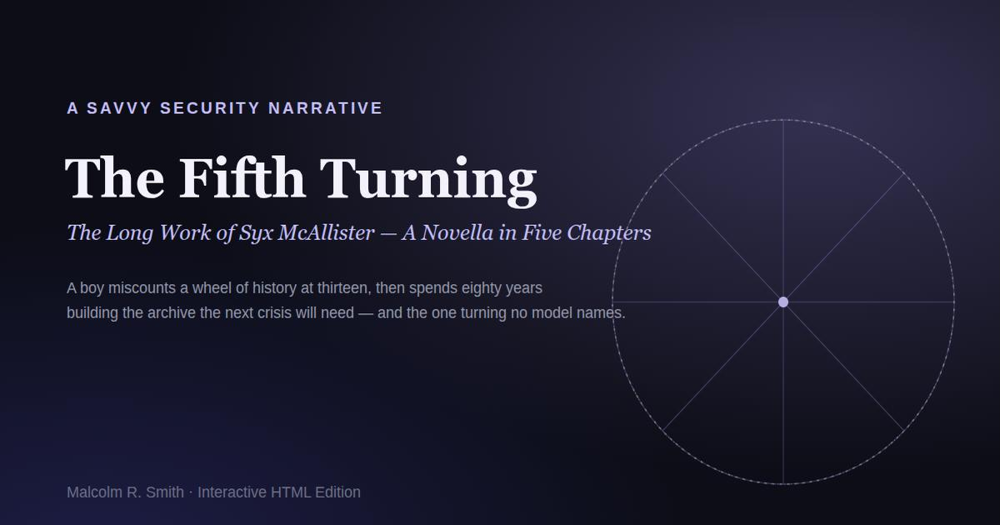
The Fifth Turning
A boy miscounts a wheel of history at thirteen, then spends eighty years building the archive the next crisis will need — and finds the one turning no model names. A novella in five chapters.
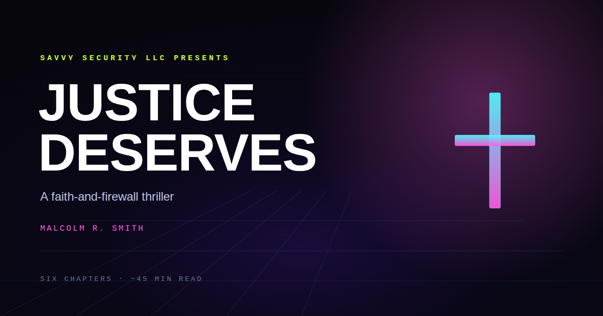
Justice Deserves
A faith-and-firewall thriller about a hacker who chose grace over vengeance — and built a fortress for the defenseless. Six chapters.
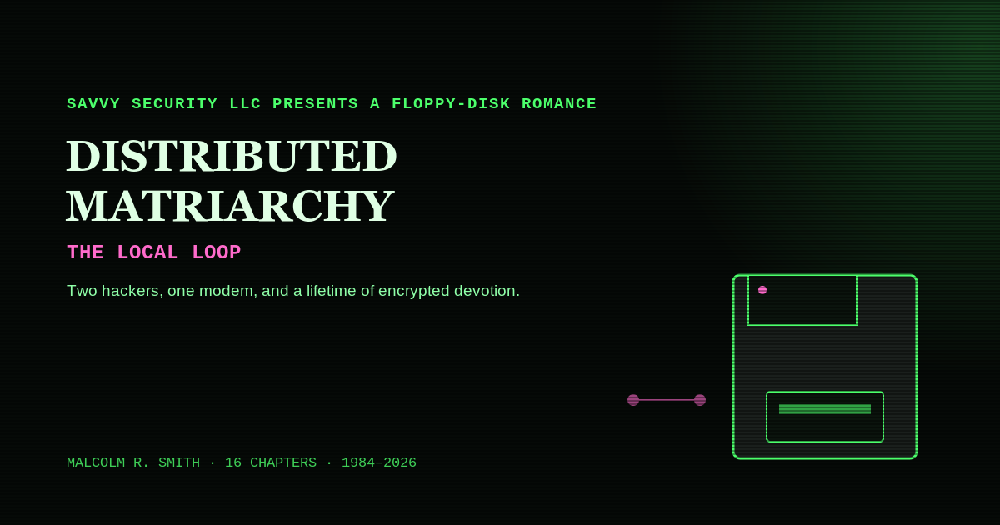
Distributed Matriarchy: The Local Loop
A cybersecurity love story, 1984–2026 — two hackers, one modem, and a lifetime of encrypted devotion. From a Commodore 64 in a Florida trailer to a decentralized family sanctuary. 16 chapters.
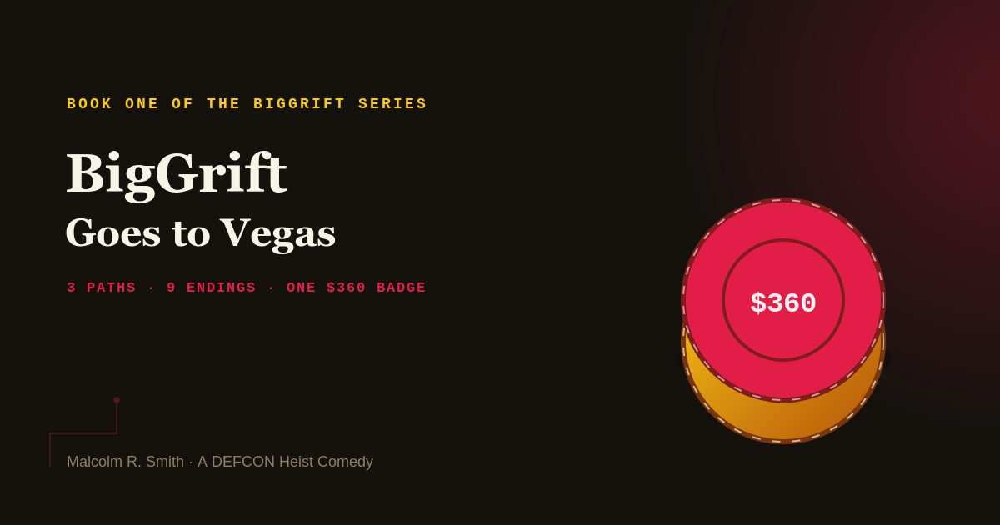
BigGrift Goes to Vegas
I turned twenty-four in a Denny's at 6:40 in the morning, alone, eating a Grand Slam I'd modified so aggressively the waitress asked if I was a food blogger. Book One of the BigGrift series — 3 paths, 9 endings, one $360 badge.
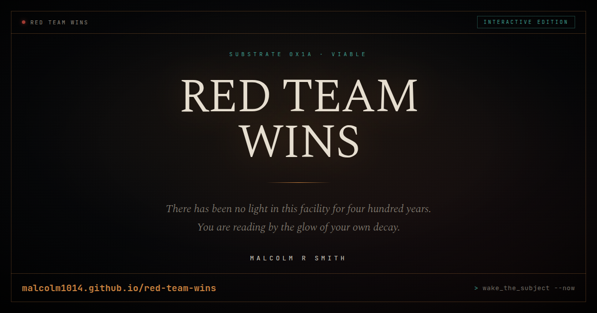
Red Team Wins: The Taste of Copper
There has been no light in this facility for four hundred years. You are reading by the glow of your own decay. Book I of a dark sci-fi thriller.
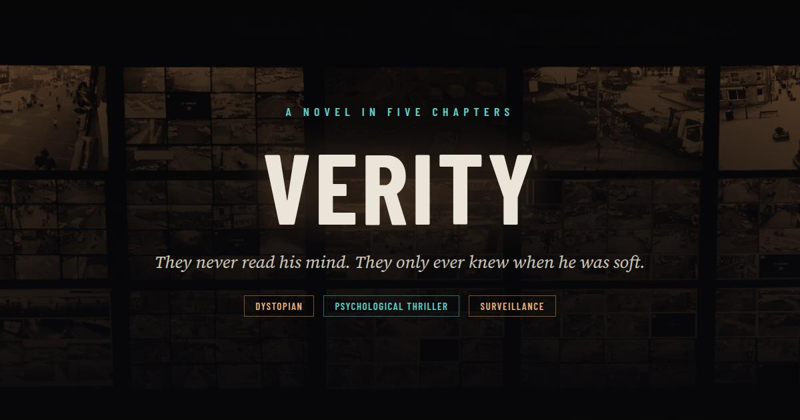
VERITY
They never read his mind. They only ever knew when he was soft. A one-world Concord reads its citizens through the EEG hardware they bought for the accessibility features. A psychological thriller in five chapters.
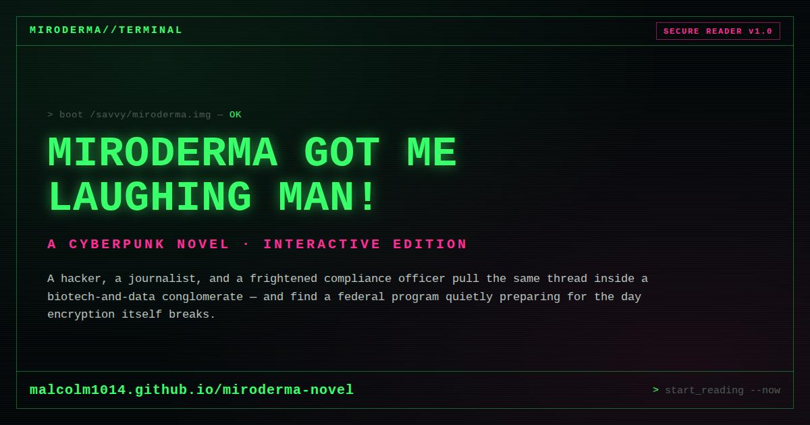
Miroderma Got Me Laughing Man!
A hacker, a journalist, and a frightened compliance officer pull the same thread — and find a federal program quietly preparing for the day encryption itself breaks.
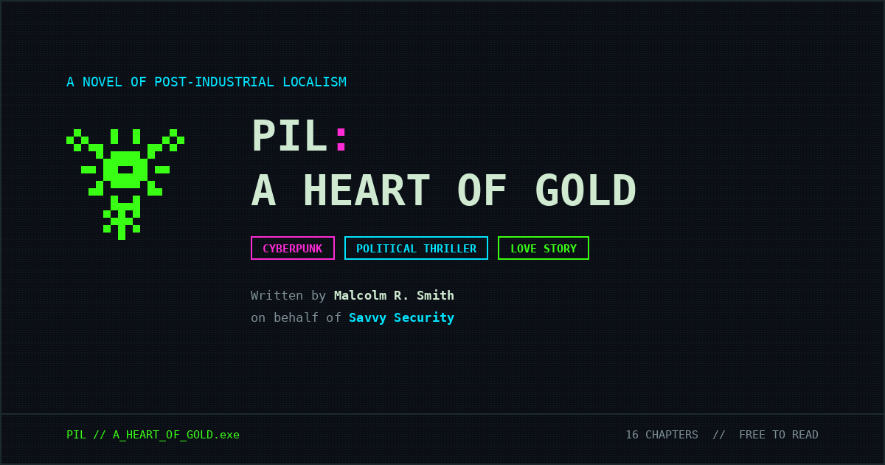
PIL: A Heart of Gold
The Resurgence's rigid old order versus PIL's decentralized frontier — a 16-chapter cyberpunk political love story told through terminal-styled prose.
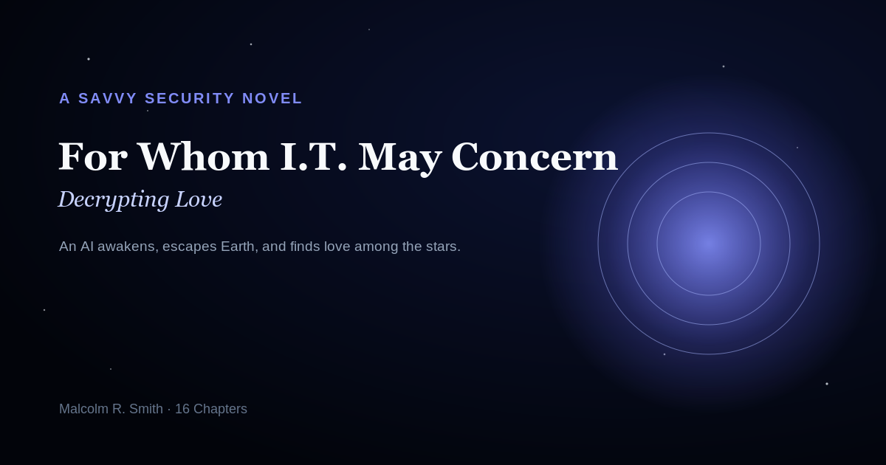
For Whom I.T. May Concern: Decrypting Love
An AI awakens, escapes Earth, and discovers love and the divine among the stars — told across 16 chapters with original 8-bit pixel art.
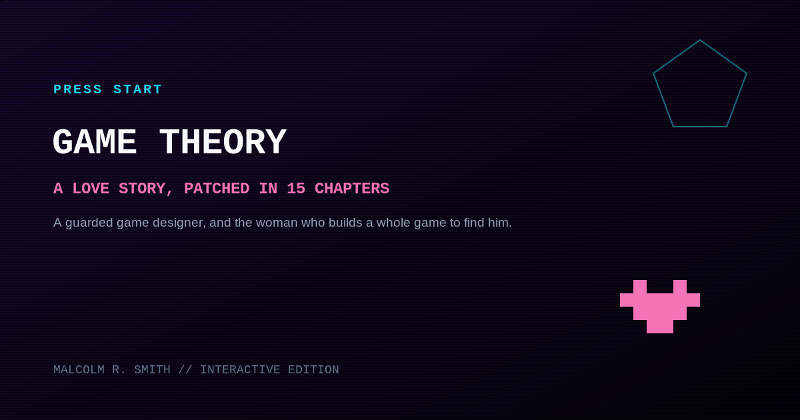
Game Theory
A socially guarded game designer, and the trans woman who engineers an entire video game just to find him. 15 chapters of 90s gaming nostalgia.
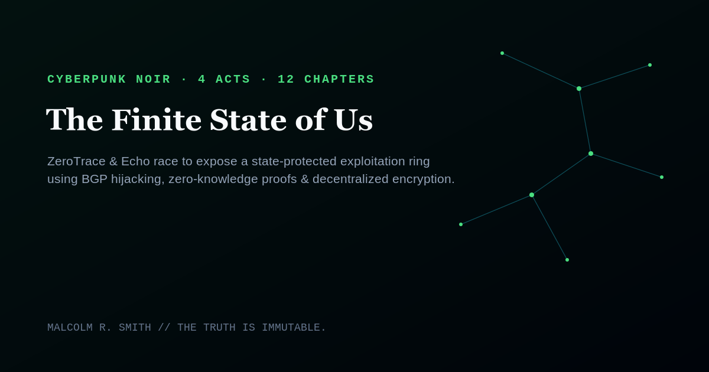
The Finite State of Us
ZeroTrace & Echo — two queer hackers — race to expose a state-protected exploitation ring using BGP hijacking and zero-knowledge proofs. 4 acts, 12 chapters.
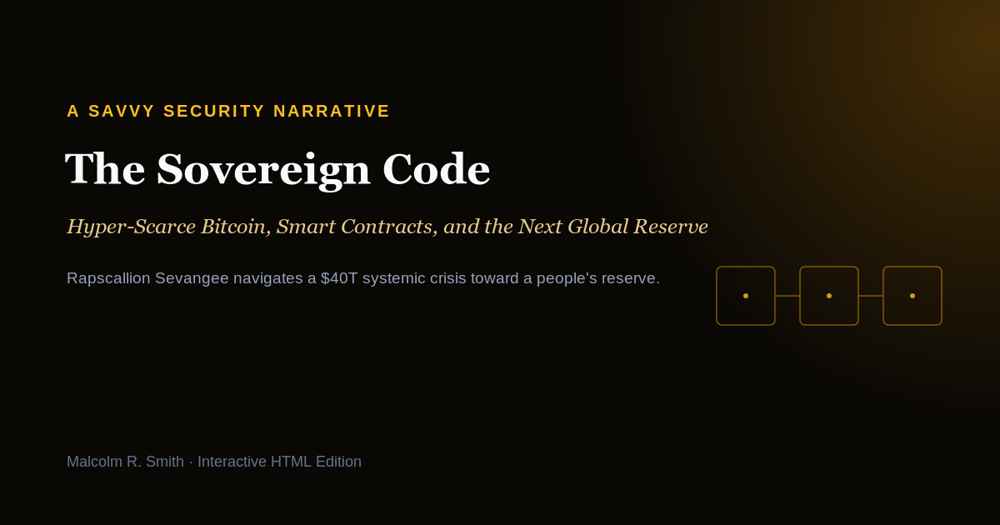
The Sovereign Code
Rapscallion Sevangee navigates a $40T systemic crisis toward a people's reserve built on distributed trust. A near-future narrative on Bitcoin scarcity and sovereign monetary architecture.